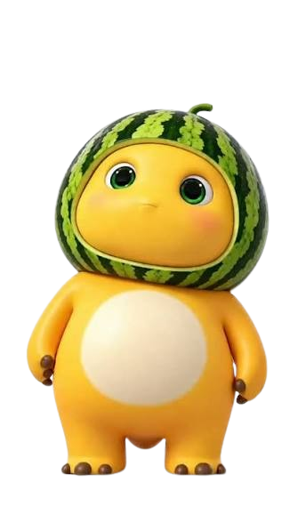

Pencet perut Nailongnyaa saaayangggg!

Yuk buat permintaan dulu! 🌟
Tiup lilin dalam hitungan ketiga ya...
✨ siap-siap... ✨
🎙️ 〰️ Mendengarkan tiupan kamu...
Geser kartu untuk melihat lainnyaa ✨
← Swipe / Geser →
Terima kasih sudah ada di hidupku 💕
I love you to the moon and back 🌙✨